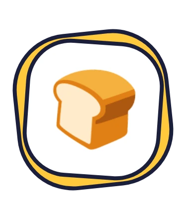

나는 어떤 빵일까?
빵집 진열대에 내가 있다면 어떤 빵일까?
10문항으로 알아보는 나와 닮은 빵
✅ 총 10문항 · 예상 소요시간 약 1분
✅ 식빵, 크루아상, 소금빵, 단팥빵, 바게트 중 하나가 나와요
✅ 같은 접시에 놓으면 잘 어울리는 빵도 알려 드려요
📖 빵에도 성격이 있어요
빵집에 가면 늘 집는 빵이 있죠. 담백한 식빵만 사는 사람이 있고, 새로 나온 빵은 꼭 먹어 봐야 하는 사람이 있어요. 빵도 저마다 결이 달라요. 무엇과도 어울리는 빵, 겹겹이 섬세한 빵, 겉은 단단한데 속은 부드러운 빵이 있죠. 이 테스트는 내 성격이 어떤 빵과 닮았는지 찾아보는 놀이예요.
다섯 가지 빵을 한 줄로 보면
- 식빵 — 무엇을 올려도 받아 주는, 누구와도 잘 지내는 사람
- 크루아상 — 겹이 많고 섬세해서 쉽게 부서지기도 하는 사람
- 소금빵 — 요즘 뭐가 좋은지 제일 먼저 아는 사람
- 단팥빵 — 속이 꽉 차고 정이 많은 오랜 친구 같은 사람
- 바게트 — 겉은 딱딱해 보여도 속은 부드러운 원칙 있는 사람
왜 음식에 빗대면 재밌을까
사람 성격을 설명하는 말은 딱딱해요. "외향적", "신중함" 같은 단어는 맞는 말인데 와닿지 않죠. 그런데 "너는 딱 식빵 같아"라고 하면 설명 없이도 느낌이 옵니다.
익숙한 사물에 빗대면 복잡한 걸 한 번에 전할 수 있어서예요. 그래서 친구끼리 서로를 동물이나 음식에 빗대며 노는 거죠. 결과가 나오면 주변 사람들도 어떤 빵일지 맞혀 보세요.
결과를 이렇게 읽어보세요
맛있는 빵에 순위가 없듯 결과에도 우열이 없어요. 식빵이 심심한 것도 아니고 바게트가 까다로운 것도 아니에요. 각자 제일 잘 어울리는 자리가 있을 뿐입니다.
'이 유형이 나온 정도'가 낮다면 여러 빵의 성격을 조금씩 가진 사람이에요. 모둠 빵 바구니 같은 사람이라고 보면 돼요.
자주 묻는 질문
좋아하는 빵이랑 결과가 달라요.
이 테스트는 입맛이 아니라 성격을 봐요. 소금빵을 좋아하는 단팥빵 같은 사람도 얼마든지 있어요.
빵을 안 좋아해도 해 볼 수 있나요?
그럼요. 질문에는 빵 이야기가 나오지 않아요. 사람을 대하는 방식과 평소 습관을 묻고, 결과만 빵에 빗대어 보여 드려요.
친구와 결과가 정반대예요.
오히려 잘 맞을 수 있어요. 바게트에 버터가 어울리듯 다른 결끼리 만나면 서로 없는 걸 채워 줍니다. 결과 화면에서 잘 어울리는 빵을 확인해 보세요.
🧾 나올 수 있는 결과 5가지
⚠️ 이 테스트는 재미로 즐기는 콘텐츠이며 전문적인 심리 진단이 아니에요.